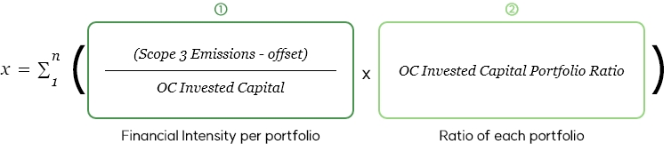

As corporates are required to manage carbon emissions corresponding to cross-national regulations, stakeholders are getting more interested in corporate scope 3 emission. As international climate change initiatives such as the Science Based Targets initiative (SBTi+) have begun to require companies to achieve long-term Net Zero for Scope 3, the global oil and petrochemical enterprises are strategically declaring the achievement of Scope 3 Net Zero by 2050.
To achieve long-term Net Zero, it is necessary to establish a specific Scope 3 reduction plan not only at SK innovation but also at the corporate-group-wide level, including major SK innovation subsidiaries. To this end, SK innovation intends to establish Scope 1, 2, and 3 reduction plans for 2022, carrying out efforts to reduce carbon.
SK innovation leads the Portfolio Transformation of its subsidiaries and manages their performances by establishing Financial Intensity targets. Financial Intensity reflects performances of the portfolio owned by SK innovation as the following ⓛ Portfolio's efforts to reduce greenhouse gas emission by unit, and ② Transformation performances of SK innovation's portfolios.
 * Invested Capital refers to operation assets owned for respective business areas, and it is considered an appropriate index for calculating emission by unit, generated from business activities.